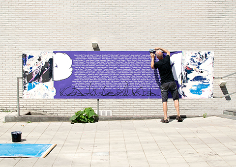

Loup Lopez
(born 1993, FR) is a graphic designer living in Brussels BE. He recently graduated from the Gerrit Rietveld Academie graphic design department in Amsterdam NL, and previously from the Institut Supérieur des Arts de Toulouse FR.
↓ Resume and extended portfolio available on request.
Selected works
Updated in May 2020

'8 is my favourite number', a serie of collaborations with Silvana Mcnulty, Kaspar Sellin, Paul Girardeau, Axel Lorenc, Dorian Chouteau, Stepan Lipatov, Eliott Déchamboux and Héloïse Colrat. Photo © Héloïse Colrat
– 4 A0s folded
Identity for the exhibition space Sur Neuf Pieds, curated by Héloïse Colrat, Maxime Fragnon and Olga Bientz.
– 125x70mm

Identity for the Graduation Show 2019 of the Gerrit Rietveld Academie, designed with Cleo Tsw and Thibault Froissant.
'Deux ripeurs', my proposal for 'Livraison à domicile', a project initiated by Héloïse Colrat and Amalia Laurent.
– 148x210mmLabels designed for a Dutch distillery.
From drawings made while calling someone.
– 841x1189mmBook design for ‘Shadow's Hand’.
– 100x190mm
'Police', a display typeface, available on request.
Book design for 'Things to consider' by Silvana McNulty.
– 210x297mmRedesign of one of the Most Beautiful Swiss Books 2017, 'The Young Gods / Documents 1985 – 2015”.
– 120x165x40mmWebsite made with Carl Herner for the annual residency of GRA students in Zürich.
Curation and identity for the exhibition 'No Pain, No Gain', Clermont-Ferrand, France. Here is the post-catalogue of the event.
'Sharpixxxxxx', a variable font also available on request.

Neon made for Le Trouble a project space initiated by Kimberley Cosmilla and Marcel Mrejen based in ISO Amsterdam. Photo © Margot Gabel.